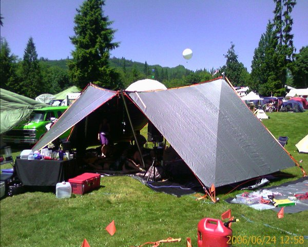

I've designed a few different shade structure thingies that can stand up to storms at Burning Man. I really don't like domes out there - they have limited airflow, they require a looot of material and fabrication (many hundreds of pounds of pre-cut tubing for a 30'-wide structure), and they're not all that efficient when it comes to providing lots of shade for minimal cost.
My structures are tensegrity-based (which in this context means they use both compression and tension members and no two compression members are connected) which makes them very resilient and lightweight, but rather a pain to set up. On the plus side, they pack down into a duffel bag + one bundle of poles, and the poles don't require any work at all.
#1 - 20' x 30' rectangular canopy made of a dozen queen-size bedsheets, tie-dyed and sewn together into a large sheet, with seams reinforced with 1" polypropylene webbing. Supported by 6 10' poles and a bunch of ratchet straps.
#2 - ~25' octagonal canopy made of five 11' square tarps, 4 10' poles, and a bunch of ratchet straps and zip ties.
